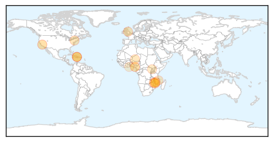
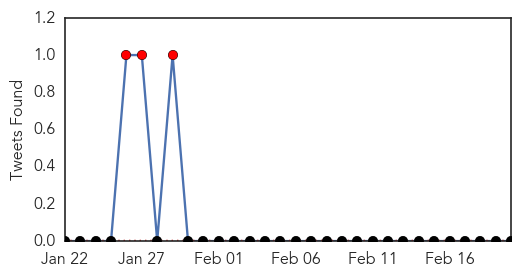
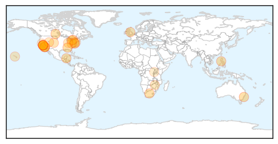
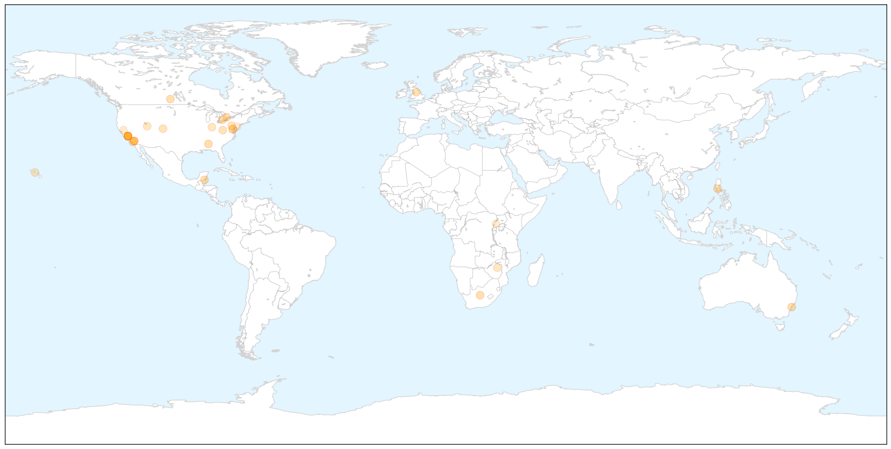
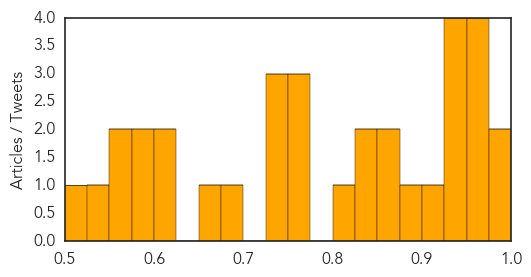

Cholera
30-Day Web Trend
0 alerts, 0 warnings

30-Day Twitter Trend
2 alerts, 0 warnings

Article Locations

Article Confidences

Top Articles:
- 0.997
- Mozambique cholera deal toll reaches 31
- 0.995
- UN Praises Cuba for Haiti Cholera Response
- 0.993
- Ancient Italian Churchyard Studied For Cholera DNA
- 0.990
- Malawi: Epidemics threaten survivors one month after the flood
- 0.987
- Malawi: Acute medical needs a month after the floods
- 0.979
- Six killed in suspected cholera outbreak in southern Nigeria
- 0.935
- UN Coordinator Against Cholera in Haiti to Visit Cuba
- 0.799
- Ghana, Business Advice, Jobs, News, Business Directory, Real Estate, Finance, Forms, Auto
- 0.786
- Cholera outbreaks stark reminder to get serious about sanitation
- 0.741
- NDDC Donates Drugs To Bayelsa Govt
- 0.687
- Mozambique: Floods Emergency appeal MDRMZ011 operations update n° 2 - Mozambique
- 0.669
- Uganda: Cholera Outbreak DREF operation n° MDRUG032 Final Report, 19 Feb 2015 - Uganda
- 0.518
- Wise Water Foundation calls on Methodist Presiding Bishop
Top Tweets:
- 0.896
- RT: Southern Africa Wkly Report 10-16Feb: 1908 cholera cases w 24 deaths confirmed in Nampula Niassa & Tete Mozambique http://…
- 0.578
- & colleagues on premptive use of cholera vaccines in high risk areas of Ebola countries http://t.co/WYQpfxmMyx vaccineswork
Measles
30-Day Web Trend
21 alerts, 5 warnings

30-Day Twitter Trend
3 alerts, 0 warnings

Article Locations

X

Article Confidences
Top Articles:
- 0.990
- Pediatricians join Public Health in urging vaccination for measles, other diseases
- 0.977
- Measles outbreak: What parents need to know about herd immunity - National
- 0.975
- Epidemiologist defends vaccination amid charges that vaccines don’t always work and actually may cause irreversible harm or even death
- 0.971
- USA goes from measles-free to 141 cases
- 0.967
- Disneyland measles cases genetically similar to Philippines outbreak
- 0.959
- Vaccination best protection from measles
- 0.944
- California health officials say may not find source of measles outbreak
- 0.936
- California health officials say may not find source of measles outbreak
- 0.936
- Potential Measles Exposure Sites Include Calif. Target, Walmart
- 0.928
- California health officials say may not find source of measles outbreak
- 0.919
- Yes, vaccinations do their part to help fight diseases
- 0.878
- Health District Officials: No Measles in Washoe County
- 0.858
- Get rid of loopholes for vaccinations
- 0.855
- Measles warning in St. Thomas and Elgin
- 0.845
- Craig health briefs for Feb. 14, 2015: VNA offers grief support group
- 0.841
- Dana Hills High School
- 0.820
- State has second-worst measles vaccination rate in U.S.
- 0.765
- Measles vaccination rates improving but potential for outbreak remains
- 0.761
- Public health department vaccination awareness campaign
- 0.760
- Measles outbreak in surrounding states sparks RMH to take precautions
- 0.743
- Zimbabwe to see 1st HIV vaccine trial
- 0.742
- As Debate Over Measles Vaccine Takes Center Stage, Lawmakers, Health Experts Experience Deja Vu
- 0.733
- State asks childcare facilities to track unvaccinated children
- 0.681
- UPDATE: Additional cases of measles reported in San Bernardino County
- 0.661
- CA health officials say may not find source of measles outbreak
- 0.623
- Blowing the antivaccine dog whistle again – Respectful Insolence
- 0.614
- Sen. Barbara Boxer slams anti-vaccination parents
- 0.589
- Sites in Redlands, Highland and Loma Linda identified as potential measles exposure locations
- 0.577
- Uganda: Uganda: Measles Outbreak DREF Final Report, n MDRUG035
- 0.565
- Vaccination win with imminent HIV vaccine, plus cervical cancer protection even stronger thanks to local research
- 0.554
- Amid US measles outbreak, few rules on teacher vaccinations
- 0.528
- The unexpected link between aborted fetuses and vaccines
- 0.522
- There’s more than one way to persuade people to vaccinate
Top Tweets:
-
No tweets found for Feb 20, 2015